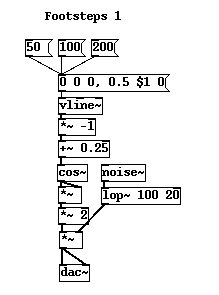
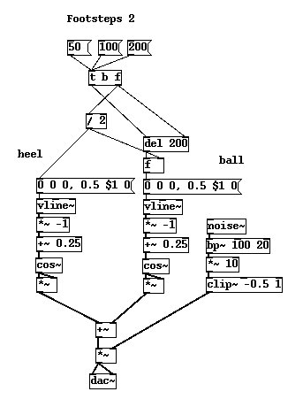
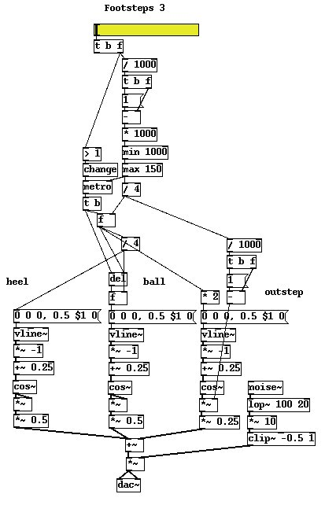
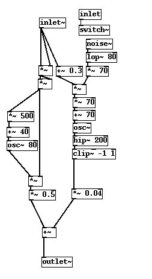
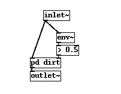
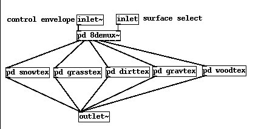
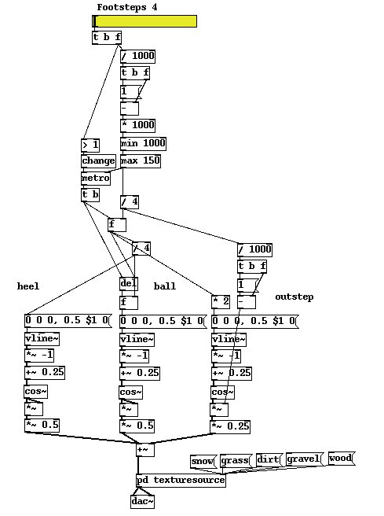

Footsteps are standard piece of foley work for film sound students. In most cases the footsteps signify the "other", an approaching menace in horror films or a way to reveal the presence of some unseen person. In games their function is slightly different. Notice that in films we don't hear constantly hear the footsteps of the first person, the camera through which we observe, but in games we need some way to let us know that we are moving,and to let others know we are moving around. Early examples of the genre like Wolfenstein and Quake didn't have these, instead our player would glide around silently. Half-life was the first game to introduce a full set of footsteps that changed to match the texture we walked on, providing a very immersive sonic atmosphere and since then movement sounds have been a standard practice in first person games.
One comical situation to avoid is what I call "odd feet". I don't know where the practice comes from but it was probably a naive attempt to add a little variation to footstep sounds from the days when computers had very limited power. "Instead of using just one step sample let's use .. get this.. TWO!" So now you have a guy who walks down the hall and goes clip clop clip clop, and when he gets outside he goes crinch crunch crinch crunch.. Does he have one foot bigger than the other? Or maybe odd boots? A similar, though not quite as laughable mistake is to use a few samples arranges in a sequence. Now he goes click clack clonk clunk click clap clonk clunk....listen to some games like Half-Life, close your eyes and imagine a giant centipede with huge boots on moving along. See what I mean? When I made the footstep sounds for some games I always used to insist, against much resistance from the coders and content managers tying to minimise their work and file sizes, that we used at least ten or twenty variation sounds for each footstep. If you make these too different it sounds ridiculous, so each has to be a quite subtle variation on common sound. Of course, just before release I'd get a message saying "we optimised the footstep sounds and thinned them out because you included some dupes".
Footstep sounds are one of the applications that so clearly demonstrates where samples for games can be rubbish. Consider the permutations. People don't move at discrete speeds, there is a continuum between creeping and sprinting, we could call them "slow_creep", "creeping", "slow_walk", "fast_walk", "jogging", "running", and "sprinting". Running makes a different sound from slow walking or creeping, you can't just speed up and slow down the samples for each case, it sounds awful. But let's be economical and reduce that to just three speeds. Next we probably have more than one character, as different shoes or boots make a different sound, again let's efficiently reduce this to two characters, "male" and "female". Now we want a different sound for a wooden hallway, concrete, grass, dirt, gravel, snow, shallow water, a metal platform, and so on. I can think of sixteen or twenty common surfaces but let's call that ten for a round number. So, using our minimum of ten variants to stop it sounding awfully repetitive we have 10 * 10 * 2 * 3 = 600 samples! At 500ms a piece that's 13MB just for a poor set of footstep samples.
Let's consider again the essential question. "What is it's nature?". In this case we are talking about an action, walking. As we walk we don't put one foot down squarely against the ground and then the other like a marching robot from a 50s scifi movie. First the heel of the foot contacts the ground. As the walker moves forwards weight is shifted slowly from the heel towards the ball of the foot. Sometime later the heel completely leaves the ground so that only the ball supports our weight. This action can be reduced to three stages, heel only, ball only, and an intermediate state where the outstep of the foot rolls along the ground transferring the weight between the two. Furthermore there is an important phase relationship between the two feet during walking which changes when running. During walking the heel of each step overlaps with the ball phase of the previous step, there is never a time when no part of either foot touches the ground. As we move to a running rythmn the foot completely leaves the ground and there is a short time where no parts touch the ground until the next step. The diagram below illustrates this. The phase marked A is the heel, B is the outstep and C is the ball. So what does the height indicate? The height of the graph shows the pressure exerted on the ground by the foot. During the heel and ball phases less surface area contacts the ground, so the pressure is greater. In the middle of the step the same weight is spread over the whole of the foot and so the pressure is lower. Notice the small overlap during this walking pattern.
A B C A B CWe aren't going to fully develop this model in which the phase relationship shifts between running and walking. It's actually simple enough to do but we are going to have enough on our plate to chew on with the next part which requires a little careful thought. How can we efficiently derive this pressure function and how will we use it to synthesise a sound? Let's start with an assumption about the functions shape. The pressure quickly rises on contact, then remains quite constant for a moment and then falls away quickly again. We could approximate this with one half cycle of a sinewave. Let's do just that to get ourselves started. A [vline~] atom generates a line for us. We want a segment that starts at 0.25 and moves to -0.25 which when we apply it to the [cos~] function will give us a half cycle. [vline~] envelope lines can be multi stage, here we have two stages. The message says move to zero and take zero time to do it after a zero second delay (which sets up our initial condition), then move to 0.5 taking $1 time to do it after a zero second delay. The effect is that we get a line moving from 0 to 0.5 if we feed the message with another integer message that gets substituted in the position of $1. Shifting this into the correct range with [*~ -1] and [+~ 0.25] gets us the correct signal to pass to the [cos~] atom, and taking the square of this gets us a sharper attack and decay.

To test out the shape I've added a little bit of resonant brown noise that roughly emulates wood or dirt. I also added a [*~ 2] stage because the noise is a bit quiet, but we will remove this in a moment and simply boost the noise level to a better amplitude instead. Using this we can hear how the shape of the function sounds. What is cool about this method is that the half cosine signal scales as we shorten or lengthen the time, which is just the way the pressure curve of a real running foot works, as we move faster each part of the foot stays in contact with the ground for a shorter time but the overall shape of the curve remains the same. So far so good, but now we need to add the other two parts of the step. Let's duplicate this part for the ball of the foot and delay it by a time. We make the delay be a function of the step time too so that everything stays in proportion.

Now we have the classic double "camel humps" needed to get the "dunk-dunk" sound of a footstep, but we need to add the outstep part. Why, it sounds good enough? Well, it might sound okay with brown noise at a particular speed now, but we need to strictly follow our reasoning as we build the model. You will see why more clearly in a moment, but remember now that we are modelling the pressure on the ground, not necessarily the amplitude of the footstep sound. As we speed up towards a run the time between the heel and ball phases moves too, eventually they almost overlap to produce a single curve. At very slow speeds, when creeping along the outstep part of the curve is much more significant, without it our sound wouldn't work for slow walks. We will take another half cosine function, but this time at twice the time constant so that it covers both heel and ball stages, then lower its amplitude and add it to the other two signals. The superposition gives us what we want, a three stage curve that rises, falls to medium level, rises again and finally decays to zero. Can you see how we could simplify some parts of this? For starters we generate a line function and then shift it, we could have just chosen better values for the message in the first place. Secondly, since [vline~] is capable of making quite complex multi stage envelopes why didn't we just use that facility to get our three part curve? The reason is that here I wanted to avoid some quite unwieldy dollar substitutions that would have been less clear. You can try optimising this code. In theory it should be possible with just one [vline~] and one [cos~] atom.

Now we have almost completed our control code I've attached a section that just lets us deal in terms of the player speed. A metronome generates a trigger that varies with walking/running rate. When the player is at rest we stop the metronome completely. Now we have a single slider which lets us simulate movement, as we push it up our player slowly creeps forwards, a little more and he walks faster and eventually up to a running speed. Notice how the length of each step and the time between phases scales nicely, it compresses or lengthens with speed. Great! Let's go to the next step and see how this control code can be used to synthesise a range of textures on which to walk.
In the next stage we have completely abandoned our naive attempt to only control the amplitude of fixed texture sources. What we need to remember is the true nature of the control signal. The control signal is an index of pressure, the pressure exerted by the foot on the ground texture and it doesn't necessarily corespond directly to amplitude. Think about walking on dry leaves and snow. Not only do low pressure values produce low amplitudes, they produce a slower movement in the texture spectrum, both are crunchy textures whose density increases with pressure. In the middle of the heel and ball phases where pressure is greatest the sound is not only loud it is richer. Now think about walking on a plate metal surface, like the overhead walkways so popular in games. Walking more slowly, leaving the foot in contact with the surface for longer produces a much softer less clangy sound than running. That's because of damping. If the foot impacts only momentarily the metal will ring loudly, but keeping the foot in contact with the surface longer dampens the sound. Therefore in the middle of the heel and ball phases the sound is quieter than the initial impact. Both these materials exhibit different reactions to pressure.
To take our patch to the next level we have to recognise that our pressure contour cannot be used as a simple amplitude control, instead we will route it to several synthesisers, each of which will respond appropriately to it. It may seem wrong to refer to the pressure index as a control signal, because it is an audio rate signal, but its function is very much a control signal and we mustn't be confused by Puredata or Csound type naming conventions. It is a control signal because we choose it be, because of its function not because of whether it's an audio or control rate signal. We will derive other signals from it within our synthesisers to obtain values that modify the texture sound quality as well as just the amplitude.
A slightly crunchy dirt sound is made in the following patch from a bit of simple FM. This patch fixes the centre of the spectrum somewhere around 140Hz but our pressure value varies the modulation index as well as the output amplitude. That means in the middle of each step peak where the pressure is greatest, we get a richer and denser sound. Most of the signal is dominated by the noise source which produces rich sidebands around the pitch centre by FM, but there's another parallel subpatch that creates a bit of bass, a bit of a "thunk!" noise we get when walking on solid ground outside.

As we add synthesisers for each texture the CPU is going to quickly get loaded if we leave them running all the time. We must add a [switch~] block to every synth to ensure it shuts down computation when we're not needing it. Normally that's easy because we would be driving our synthesisers with control rate messages. Problem here is that we can't include the control part for the switch inside the actual subpatch itself since it depends on an audio rate control signal not a message and once it is switched off all audio rate computation ceases. That means once switched off we will never get to see a signal capable of switching it on again. To get around this it's necessary to wrap the generator in another control wrapper which does nothing more than see if the incoming control signal is above a very low threshold and if it is to pass a control rate message into the generator block to switch it on.
See in the patch above that the subpatch switch is fed by an inlet and below is the wrapper we use to enclose it.

Below are five quick examples of texture gens you can examine in the puredata file to see how to they are done. The [8-waydemux~] block that routes the control signals contains some very ugly code, just take it for granted for now :) And if you can tell me a more elegant way to it with internals code I would love to hear about that.

Finally lets look at our patch with a texture generator as it might be in real game code. This is a very simplified arrangement that gives us a choice between a few textures like snow, grass and gravel. In practice the textures would be generated from surface property values and we would get a whole range of sounds that varied in crunchiness, pitch, resonance and tone.

The sound example is a little scene where our player runs across some snow, grass and gravel speeding up and slowing down along the way. Audio .mp3 Puredata file .pd Links